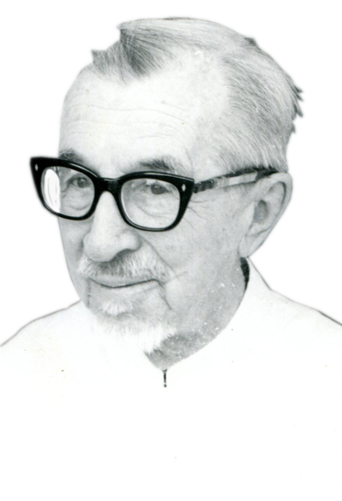

Nacque a Köflach (Austria) 12.12.1888, fu battezzato lo stesso giorno della nascita in casa dal suo stesso papà, «...essendo assai debole, mio padre temeva che campassi nemmeno un paio di giorni per portarmi in chiesa per il Battesimo, e per assicurare il Paradiso al suo primogenito mi battezzò lui stesso e tacque e fui poi battezzato un'altra volta dal Curato...». Dopo le medie, Arthur entrò nel seminario di Graz, da dove passò a Verona. Fece la vestizione il 1° novembre 1910 e la professione due anni dopo; il 9 agosto 1914 fu ordinato sacerdote. In Italia, come austriaco, fu confinato in Sardegna fino al febbraio 1919, quando poté rientrare a Roma e, dopo una visita alla famiglia, fu inviato a Thiene e a S. Vito al Tagliamento e quindi a Ellwangen (Würtemberg). Nel 1923 fu destinato ad aprire la prima stazione tra i Denka con p. Olivetti. Quando arrivò a Wau alla fine di agosto 1923, la zona Denka era allagata. La fondazione della prima missione a Kwajok avvenne il 31 dicembre 1923. Non furono inizi facili. P. Nebel venne in Europa in vacanza e per salute nel 1933 e nel 1948. Ma il 31 dicembre 1948 fu invitato a Kwajok per il 25° della fondazione, cantò la messa solenne e fu «l'eroe del giorno»! In 25 anni si contavano oltre 2.000 battesimi, 80 matrimoni, 800 catecumeni, e l'avvio di altre due stazioni tra i Malual e i Tuie, a Nyamlel e Mayen. Non vi furono conversioni in massa, data la diffidenza e l'ostinazione propria dei popoli pastori. P. Nebel fu in seguito per qualche tempo a Rumbek e al Bussere. Nella primavera del 1955 passò a Warap, dove rimase due anni. Tra l'ottobre 1957 e il marzo 1958 passò successivamente a Raffili, Bussere, Aweil e Wau finché, dopo un passaggio da Tonj a Thiet, il 30 agosto 1958 rimpatriò. Uno dei suoi allievi, divenuto ministro della cultura e informazione nel Sudan meridionale, gli ottenne il permesso di entrata come esperto della lingua Denka. E così, a 90 anni, il 20 gennaio 1978 p. Nebel prese l'aereo che lo portò a Khartoum. Il 23 maggio 1980 ritornò al centro ammalati di Verona, dove il Signore lo chiamò a sé il 10 aprile 1981. Le ultime parole scritte con la sua mano malferma sul suo taccuino di note personali sono: «Deo gratias!».
I suoi lavori: Denka Grammar (Rek-Malual Dialect) with Texts and Vocabulary, Mus. Comb. No.2. 1948. Denka Dictionary with Abridged Grammar, Verona 1836 (formato tascabile), (la 2& parte dei Vocabolario ha la traduzione Inglese e italiana). Denka Dictionary, 1954, ed. Nigrizia. Il Ministero dell'Educazione del Sudan affidò a lui la compilazione dei libri di lettura per le Scuole Elementari (stampati Wau-Bussere).
